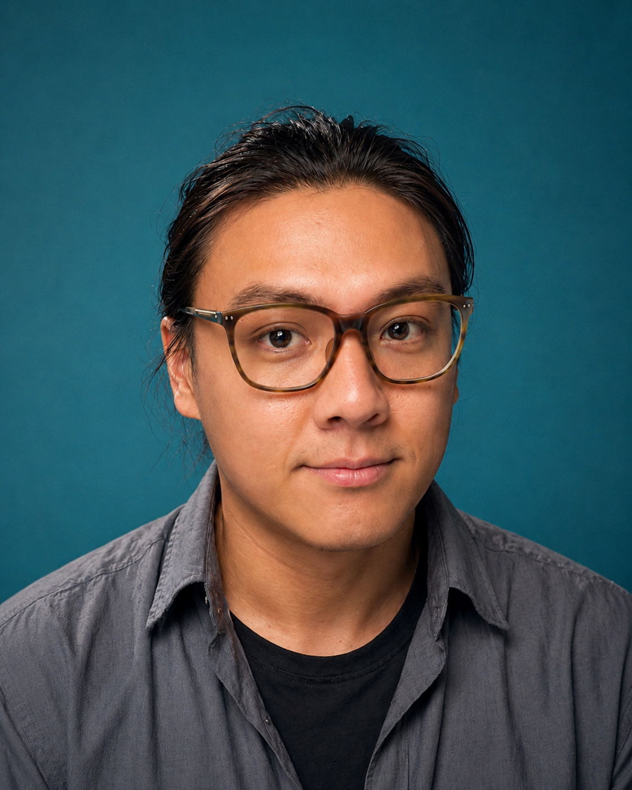
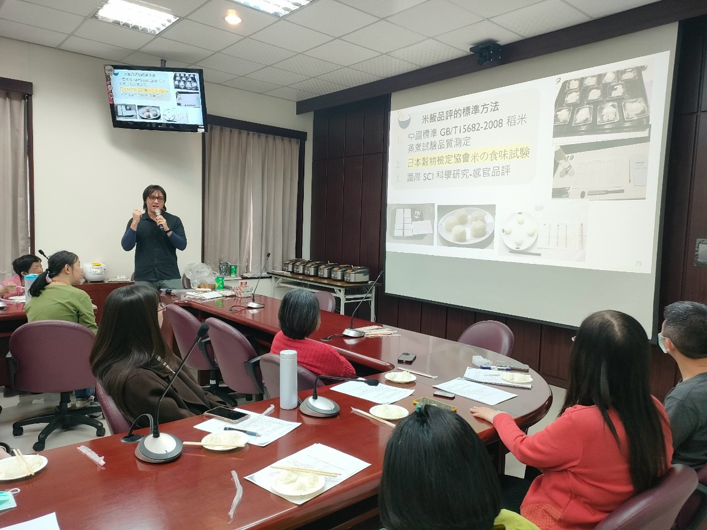
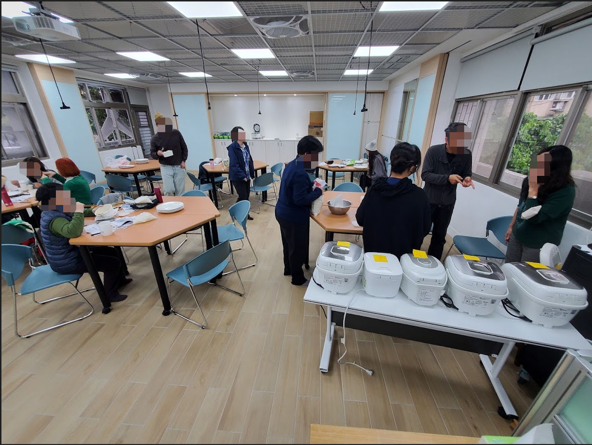

品種與品質基礎
60–90 分鐘
認識臺灣水稻品種與品質，不含現場品評。適合一般消費者、社區大學與食農教育活動。
依聽眾背景與活動時間，選擇合適的講座或工作坊。
認識臺灣水稻品種與品質，不含現場品評。適合一般消費者、社區大學與食農教育活動。
搭配 3–5 種米飯比較或盲測，理解品種與食味差異。至少 30 分鐘講授，加上 30 分鐘品評與討論。
依需求安排外觀品質判讀、盲測設計、官能評分及品評資料分析。
水稻馴化、臺灣品種發展與特色，以及品種對外觀、質地、香氣及食用方式的影響。
外觀、碾米、理化、蒸煮與食味品質；直鏈澱粉、蛋白質、糊化及栽培、乾燥、儲藏的影響。
樣品準備、盲樣與順序，以及外觀、香氣、口味、硬度、黏性、彈性及總評。
CNS 白米外觀品質、粒型判讀及不同栽培處理比較，依需求調整內容與深度。

農業部臺中區農業改良場｜助理研究員
具農藝學與遺傳育種背景，從事水稻栽培及稻米品質研究。課程結合學術文獻、田間與米質試驗，以及稻米產業實務，依參與者背景調整。
認識實際授課方式與不同場域的課程安排。

將品種、品質判讀與食味概念連結生產實務。

結合感官體驗與米質研究，延伸食農教育知識。
課程及執行方式依活動需求協調，費用依單位核支規定辦理。
上述為經費估列參考，可依邀請單位會計規定調整。
至少提前約 1 小時確認米樣、秤量、洗米、加水、炊煮、電子鍋設定、樣品編碼與品評流程。
建議 3–5 種米樣，每種使用一個電子鍋。可由主辦單位提供，或事前討論品種建議及借用方案。
確認插座、延長線及電路負載，確保多台電子鍋可安全同時使用；預留分樣與品評空間。
建議至少 1 名工作人員協助洗米、炊煮、盛裝、分送、搬運與整理。盤子、筷子及標籤可由主辦單位準備，或編列助教費處理；邀約時請確認材料與耗材費支應方式。
以臺中區農業改良場至活動地點之必要路程估算。大眾運輸覈實，自用汽車每公里 3 元估列；核支方式請於邀約時確認。